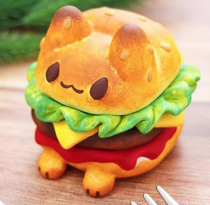

Catburger Recipe
Oh fak go back

Ingredients:
For the "Burger":
- 1 pound ground beef or plant-based burger patties
- Salt and pepper to taste
- Burger buns
For the "Cat Ears":
- Slices of cheddar cheese or vegan cheese
- Black olives or black bean slices
For the "Whiskers":
- Thin strips of red bell pepper
For the "Nose":
- Small slice of tomato or red bell pepper
For the "Eyes":
- Sliced pickles or cucumber
- Black olive slices or small pieces of dark-colored vegetables (e.g., black beans or cooked eggplant)
For Assembly:
- Lettuce leaves
- Sliced tomatoes
- Sliced onions
- Condiments of your choice (mayonnaise, ketchup, mustard, etc.)
Instructions:
-
Prepare the Burger Patties: Season the ground beef or plant-based patties with salt and pepper.
Shape them into burger patties and cook them on a grill or stovetop according to your preference (rare,
medium, well-done).
Toast the burger buns.
-
Create the Cat Ears: Cut out triangle shapes from slices of cheddar cheese or vegan cheese to resemble cat
ears.
Place the cheese triangles on the top of each burger patty while they're still warm, so they slightly melt
and adhere.
-
Add the Whiskers and Nose:
Place thin strips of red bell pepper on each side of the burger to create the whiskers.
Put a small slice of tomato or red bell pepper in the center of the burger to make the nose.
-
Make the Eyes:
Place sliced pickles or cucumber on the burger where the eyes should be.
Add small pieces of black olives or dark-colored vegetables to create the pupils of the eyes.
-
Assemble the Catburger:
Place the cat-themed burger patty on the bottom half of the toasted bun.
Add lettuce leaves, sliced tomatoes, and onions on top of the patty.
Spread condiments of your choice on the top half of the bun.
-
Put It Together:
Carefully place the top bun with condiments on the assembled burger to complete your catburger creation.
Serve:
Your meow-licious catburger is ready to be served! Enjoy this playful and imaginative meal.
Remember, this recipe is just for fun and creativity, and it doesn't involve actual cat meat. Enjoy making and
devouring your cat-themed burger responsibly!